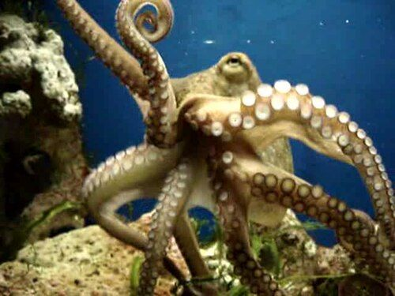

1Üç kalp, üç görev
İnsanlarda tek bir kalp hem akciğerlere hem de vücudun geri kalanına kan pompalar. Ahtapotlarda ise bu iş üç kalp arasında bölünmüştür.
Solungaç kalpleri denen iki küçük kalp, kanı iki solungaca pompalar. Ahtapot solungaçlarda sudan oksijen alır. Üçüncü ve en büyük kalp, yani sistemik kalp, oksijenlenmiş kanı vücudun geri kalanına, kollara ve organlara gönderir.
2Yüzerken kalbi duruyor
Ahtapotun en tuhaf özelliklerinden biri, yüzerken ana kalbinin atmayı neredeyse bırakmasıdır. Ahtapot hızlı hareket etmek için vücudundaki suyu bir huni gibi dışarı püskürtür. Bu sırada sistemik kalp yavaşlar ya da durur.
Bu yüzden yüzmek ahtapot için çok yorucudur. Ahtapotlar çoğu zaman yüzmek yerine kollarıyla deniz tabanında sürünerek hareket etmeyi tercih eder.

3Kan neden mavi?
Bizim kanımızda oksijeni hemoglobin denen bir protein taşır. Hemoglobin demir içerir ve oksijenle birleştiğinde kanı kırmızı yapar.
Ahtapotların kanında ise hemosiyanin adlı bir protein vardır. Hemosiyanin demir yerine bakır içerir. Oksijenle birleştiğinde kanı mavi renge boyar. Hemosiyanin, soğuk ve oksijeni az sularda hemoglobinden daha verimli çalışabilir. Bu da ahtapotların okyanusun soğuk ve derin bölgelerinde yaşamasına yardımcı olur.
4Sadece kalpleri değil, beyinleri de tuhaf
Ahtapotlar omurgasız hayvanların en zekileri arasındadır. Sinir hücrelerinin büyük kısmı başlarında değil kollarındadır. Bu sayede her kol bir ölçüde kendi başına dokunabilir, tadabilir ve hareket edebilir.
Ahtapotlar kavanoz kapağı açabilir, labirentleri çözebilir ve derilerindeki özel hücrelerle saniyeler içinde renk ve doku değiştirerek kamufle olabilir.
💡 Biliyor muydun?
- Ahtapotların vantuzları hem tutunmaya hem de tat almaya yarar.
- Ahtapotlar mürekkep püskürterek düşmanlarının görüşünü engeller ve kaçar.
- Çoğu ahtapot türü sadece 1-2 yıl yaşar.
✅ Kaynaklar
📷 Görseller
- Kapak: albert kok · CC BY-SA 3.0 · Wikimedia Commons
- Bir ahtapot: Bilinmeyen yazar · CC BY-SA 3.0 · Wikimedia Commons